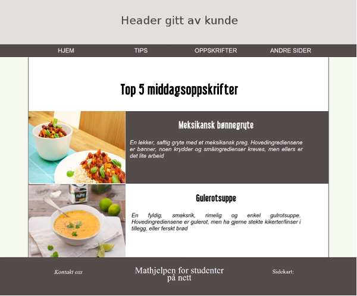
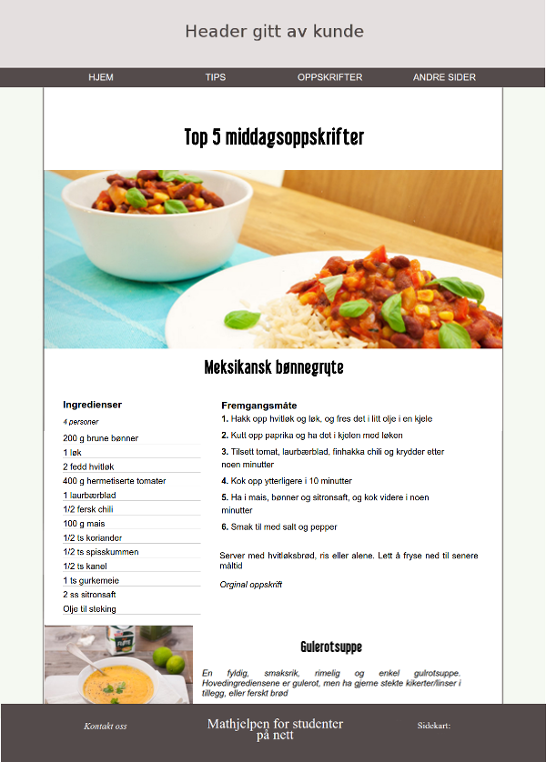

P2 Designdetaljer
Aasne, Dora Oline, Julie, Katrine
IT2805, 7. Oktober, 2015
Administreringsinformasjon
Klient: Studentforeningen i Trondheim (SfiT)
Websidens navn: StudentMat
Kontaktperson: Katrine Jordheim
Hensikt, mål og publikum
Hensikten med siden er å gi studenter en matside rettet mot deres behov. Studenter er ofte nye på kjøkkenet, med lite erfaring, penger og tid og dette kan lett føre til en nuddel- eller grandiosa-diett. SfiT ønsker av denne grunn å lage en side med tips til økonomi, middagsretter og matpakker, matlagingstips, basisingredienser og lignende, for å gjøre studenttilværelsen lettere på matfronten. Publikum er hovedsakelig studenter, men inkluderer også alle andre som finner siden nyttig.
Navigasjonsstruktur
Siden vil ha en navigasjonsbar på toppen av siden som vil være fiksert når man scroller, og som følger med til alle sidene. Denne viser fire av sidene (hjem, tips, oppskrifter og andre linker). Når man holder musen over en av dem eller klikker, vil en drop-down meny dukke opp hvor man kan navigere seg til andre sider.
Vi vil med dette få en enkel og oversiktelig manøvrering, hvor en lett kan navigere seg mellom sider med få klikk. Dette passer godt med studenters travle hverdag og høye forventninger til effektivitet og brukergrensesnitt. Dette vil også gjøre siden oversiktelig med tanke på hvor en finner hva og hva siden kan tilby. Om en nettside ikke klarer å oppnå denne brukervennligheten, er det fare for at brukeren vil substituere den med en annen side.

Oppsett og utseende
Det vil være et enkelt og behagelig design som er felles for alle sidene. I toppen vil det være en header med logo gitt av klienten. Trykk på headeren vil bringe en tilbake til "hjem". Under headeren er navigasjonsbaren med et enkelt og stilrent design. Denne vil forbli fiksert på toppen av siden når en scroller nedover, og også være på alle sidene, og gir dermed enkel navigasjon. Headeren følger ikke med nedover ved scrolling. Dette gir både mer plass til selve innholdet på små skjermer, og sørger for minimalt med støymomenter. Selve sideinnholdet (som er ulikt for hver side) vil være i en midtstilt boks, med samme bredde som innholdet i footer og navigasjonsmenyen. Dette gjør det enklere å lese innholdet, samt gir et responsivt design med tanke på ulike skjermstørrelser og enheter, enklere å implementere. På bunnen vil det være en footer med motto, sidekart og linker til kontakt-skjema, facebook, instagram o.l. Footeren kommer til syne når en når bunnen av siden.

Det generelle designet på siden, hvor innholdet som er ulikt for sidene vil være i den hvite boksen.
Når man scroller ned vil menyen henge igjen på toppen av siden.
Spesifikasjoner som gjelder alle sider er som følgende:
- Font:
- Overskrifter:
- H1: "Libel Suit", str: 33pt
- H2: "Libel Suit", str: 27pt
- H3: "Libel Suit", str: 22pt
- Navigasjonsbar: "Sans-serif", str: 15pt
- Brødtekst: "Helvetica", str: 14pt
- Fargetema:
- Tekst i navigasjonsbar (normalt): #FFFFFF
- Tekst i navigasjonsbar (hovrer): #544b4b
- Tekst i hovedinnhold: #000000.
- Tekst i footer: #FFFFFF
- Bakgrunnsfarge i hovedinnhold: #FFFFFF
- Bakgrunnsfarge på siden: #f5f9f2
- Bakgrunnsfarge på navigasjonsbar (normal): #544b4b
- Bakgrunnsfarge på navigasjonsbar (hovrer): #FFFFFF
- Bakgrunnsfarge på footer: #544b4b
- Skyggelegging av hovedinnhold: #544b4b.
- Bakgrunnsfarge på bokser som kan åpnes og lukkes (hovrer): #544b4b
- Tekstfarge på bokser som kan åpnes (hovrer): #FFFFFF
- Bredde på innhold: 1000px.
- Linker:
- Generelt: Kursiv og svart.
- Footer: Kursiv generelt, og har i tillegg underlinje ved hovring.
- Navigasjonsbar: Store bokstaver, og "inverse" farger ved hovring. Ved hovring vises en dropdown meny som er mørk og delvis gjennomsiktig, med hvit tekst og store bokstaver. Også i drop-down inverseres fargene ved hovring.
- Header: 1000px bred med en logo gitt av kunden. Bakgrunnsfargen til logoen skal matche bakgrunnsfargen på headeren slik at det ser ut til å gå i ett.
- Footer: Matcher navigasjonsbar for å gi et helhetlig inntrykk. Inneholder linker til sosialt media, link til kontaktskjema og sitemap.
- Logo: Kunden gir oss logo. Skal ha friske farger som passer til sidens fargetema og tema.
Sidens innhold
Hjem
Dette er den første siden brukeren kommer inn på. Denne siden vil inneholde litt info om bakgrunnen til siden, hva man kan forvente å finne her og en tilfeldig oppskrift. Sistnevnte vil genereres tilfeldig ved hjelp av javascript, og vil derfor være forskjellig hver gang man går inne på siden. I tillegg vil det komme en liten tekst mellom introduksjonen av siden og oppskriften, om Sfit, hva de allerede tilbyr av tjenester og hva de ønsker å oppnå.
Siden vil gi en introduksjon av oss til brukeren, og forhåpentligvis gi brukeren lyst til å navigere seg videre.
Overskrifter er midstilt, og resten av teksten er justify. Oppskriften er innrammet og midstilt og under introteksten.
Alltid ha på kjøkkenet
Siden vil inneholde tre bokser, en for kjøkkenskap, en for fryser og en for kjøleskap. Disse vil ha en kant rundt seg, svakt avrundet i hjørnene. Over dem ønsker kunden et passende ikon, men disse er per dags dato ikke gitt.
Dette tilfredstiller klientens mål om å informere brukerene om hva det lønner seg å alltid ha, i tilfelle butikker er stengt eller det er for lang vei til butikken. Dette er også nyttige basisvarer som ofte kan brukes og lage billige middager av. Overskriften til hver av boksene vil være midstilt. Listeelementene vil ikke ha noen dot/strek eller lignende forran seg.
Middagsretter
Siden vil inneholde middagsoppskrifter som tilfredstiller det studenter ofte ser etter, blant annet enkle, billige og ikke tidkrevende.
Øverst vil det være en overskrift. Denne er midstilt og med h1-egenskaper. Hver oppskrift vil kunne åpnes og lukkes. I lukket tilstand vil det være et bilde på ca. 320x240 px hel til venstre, og til høyre tittelen på oppskriften og en kort beskrivelse av den i kursiv.
Når en hovrer over bildet eller teksten, vil bakgrunnen til teksten få nav-barens farge, og teksten vil bli hvit.
Om en klikker på enten bildet eller teksten, vil bildet komme i stort format. Det vil da være ca. 400px høyt og 1000px bredt. Under vil navnet til oppskriften stå i h2-stil, midstilt.
Ingredienser vil være ramset opp på venstre side, med god linjeavstand og en understrekning under hver.
Til høyre vil fremgangsmåtens steg være oppramset, med tall foran seg som er uthevet. Under fremgangsmåten vil det stå en eller to korte tips, og under der igjen en link til siden hvor oppskriftens inspirasjon er funnet.
Matpakkeoppskrifter
Lunsj på skolen er for mange en stor utgift, og egne matpakker kan redusere matbudsjettet betraktelig. Denne siden vil dermed oppfylle klientens mål om å inspirere og gjøre det enklere for studenter å selv lage matpakker, og dermed spare penger.
Design og innhold er likt som middagsoppskrifter, sett bort fra at oppskriftene er for matpakker og ikke middager.
Matlagingstips
Siden vil inneholde videoer av ulike teknikker, for eksempel å filetere fisk, koke egg, skrelle avokado og andre teknikker nye kokker ofte har bruk for, men ikke kjennskap til.
Personer i SfiT målgruppe er ofte nye på kjøkkenet og med lite erfaring. Siden skal oppfylle kundens krav om å gi gode tips og instruksjoner til vanlige oppgaver på kjøkkenet, i ønske om å hjelpe studenter i gang med mer avansert matlaging enn grandiosa.
Instruksjonene vil være tilgjengelig i form av tekst og/eller video. Alle filmene er 315px høy og 420px bred, og midstilt. Videoer er oftere mer interessante og lærerike enn instruksjoner i form av tekst, samt kan bli sett på, mens en forsøker å utføre teknikken selv. Det vil derfor være mest mulig videoer.
Innholdet vil være "gjemt" i bokser, hvor bare overskriften er synlig. Når en så klikker på overskriften, vil boksen åpnes og en kan se selve instruksjonene og beskrivelsene. Dette gjør siden ryddig, selv når det er mange ulike teknikker som blir omtalt.

Når en annen boks åpnes, vil den som var åpen, lukke seg.
Økonomi og planlegging
Siden vil fokusere på økonomi og planlegging, og vil inneholde tips til budsjett og hvordan en kan holde det. I tilegg vil det være eksempel på handleliste og ukesmeny.
Dette skal gjøre matlagingen mer strukturert og hjelpe brukerne med å få orden på økonomien sin. Dette står i stil med målet til SfiT om å informere studenter om hvordan de kan lage mer og bedre mat på et bedre og billigere vis, og videreformidler og forsterker sidens formål som er å gjøre studenters liv en liten bit enklere.
Informasjonen blir presentert hensiktsmessig ved hjelp av lister og tabeller. Det gjør det enklere for brukeren å luke ut uønsket informasjon, gjør brukeropplevelsen mer variert, og dermed også mindre kjedelig.
Fordi det er mye innhold på siden som går på både planlegging og økonomi, vil innholdet til dem legges i to bokser som kan åpnes og lukkes, i likhet med matlagingstips.
Tabellen er 800px bred med solid, svart ramme på 1 px. For å gjøre den åpen, ryddig og lesbar har den luft, altså "padding" på 7 px.
Lagring
Siden om lagring fokuserer på å opplyse om hvordan ulike typer mat bør lagres for å oppnå lengst lagringstid og mest gunstig matkvalitet.
Dette bygger opp under klientens hensikt om å gi studenter den nødvendige informasjonen til å lykkes på kjøkkenet. Lagring av mat er viktig både for kvalitet og helse, men er også med på å presse marginene der økonomien er involvert med tanke på overflødige matvarer som blir dårlig og kastes.
Innholdet er sortert i både lister, tabeller og sammenhengende tekst for å skape inntrykket av en tekst som er enkel å lese. Tabellen er 800px bred med solid, svart ramme på 1 px. For å gjøre den åpen, ryddig og lesbar har den luft, altså "padding" på 7 px.

Andre nyttige sider
På denne siden vil det være en liste med linker til andre sider kunden mener kan være nyttig for sidens brukere. Under hver link vil det være en beskrivelse av det man vil finne på siden.
Denne siden skal gi flere en pekepinne til flere sider med nyttige tips, oppskrifter eller som generelt kan være av interesse for studenter med tanke på mat.

Listen vil ikke ha bullet-points, og linkene vil skille seg fra resten av teksten. Beskrivelsen til linkene vil også ha et lite innrykk fra linkene.
Kontakt oss
På denne siden skal man kunne gi tilbakemeldinger til siden, for eksempel om feil på siden eller dets innhold, eller med forslag til innhold.
Dette vil gi brukervennlighet i form av at siden kan utvikles og forbedres. I tillegg vil siden bli mer tilpasset og ha et bedre innhold om selve brukergruppen gir tilbakemelding og tips til innhold de ønsker å se her.
Skjemaet som blir brukt har et enkelt design, det er få felter å fylle inn slik at det går rakst og at man kommer til poenget med en gang. Det er også en dropdown-meny som gjør at man ikke trenger to ulike skjemaer for å rapportere to ulike ting. Javascript vil bli brukt for å så det til å bli mer interaktivt, man vil få tilbakemelding når skjemaet er sendt, og om man ikke har fyllt inn alt riktig.

Designet er enkelt og man ser med en gang hva man skal fylle inn/ikke trenger å fylle inn. Dropdown-menyen har to kategorier: "Forslag til innhold" og "teknisk feil på siden".

Om man har fyllt inn alle feltene riktig, vil informasjonen bli sendt og man får en tilbakemelding som dette. Bakgrunnen er grønn for å vise at sendingen var vellykket.

Dersom man ikke har fyllt inn feltene riktig, vil man få en feilmelding der det står at man må fylle inn alle de obligatoriske feltene. Feltene som man mangler vil få en rød kant.
Minimumskrav
Vi planlegger å gjennomføre minimumskravene for bruk av Javascript på følgende måte.
Katrine og Julie:
- Skjemavalidering
- Highlighting av siden man er på i navigasjonsbar.
- Randomized oppskrift
Dette scriptet vil sørge for at man ikke kan sende inne skjema uten at alle feltene er fylt ut. Man vil få opp en feilmelding i tillegg til at feltene som ikke er fylt ut eller fylt ut rettblir farget røde. Dette er for å få et mer brukervennlig skjema og at man lett vet hva man må endre på. Man vil også få en melding om at skjemaet ble sendt når man har sendt det inn. Dette for at man skal slippe å lure på om det skjedde noe da man trykket på "send"-knappen. Da unngår vi også at brukeren sender på nytt for å være sikker.
Dette har også med brukervennlighet å gjøre. Navigasjonsmenyen vil indikere hvilken side man er inne på slik at man har bedre oversikt. Hvis man for eksempel er inne på en av tips-sidene, vil tabben det står tips på ha en annen farge enn resten av navigasjonsmenyen.
Denne vil bli laget om det er tid til overs, da vi ser på de andre scriptene som viktigere for brukeren. Grunnen til at det skal være en tilfeldig oppskrift på forsiden er for at brukeren raskt skal få forslag til en oppskrift og i stor grad ulike ved hvert besøk, da sannsynligheten er stor for at de besøker siden for noe rakst, billig og enkelt å lage.
Dora Oline og Aasne:
- Henting av innhold fra html til main-seksjonen på index-html.
- Navigasjonsbar med drop-down meny
- Fiksert navigasjonsbar
For å slippe å skrive kode som går igjen, for eksempel header, navigasjon og footer, og også å måtte endre samme kodesnutt flere steder, vil vi benytte javascript og jQuery. Med dem vil vi ha et dokument, index.html, som har den grunnleggende strukturen, og med ulike tagger/felter for for eksempel header, navigasjonsbar, footer og innholdsboks. Vi koder så de ulike elementene i respektive filer, og laster dem inn. Dette gjør koden mer ryddig og oversiktelig, og også enklere å endre.
For å holde navigasjonsbaren minimalistisk, ryddig og oversiktlig, vil det bare være fire knapper i den: hjem, tips, oppsrifter og linker. To av disse vil ha en dropdownmeny for sider relatert til knappen. For eksempel vil tips ha en drop-down meny med link til alltidHa.html, matlagingstips.html, okonomiOgPlanlegging.html og lagring.html.
Vi vil benytte javascript for å få navigasjonsbaren til å være konstant synlig på toppen av siden. På denne måten slipper brukerene å måtte scrolle seg opp til toppen av siden eller bunnen, men kan lett navigere seg til en annen side ved behov.
Plan
Organisatorisk oppsett
Vi har samlet alle filene våre i en mappe som heter studentmatProsjekt som vil bli opprettet når vi når kodingsfasen av prosjektet.
Liste over filer og mapper:
-
website/
general.css
index.html
script.js
html/
alltidHa.html
footer.html
home.html
kontakt.html
lagring.html
linker
matpakker.html
middager.html
nav.html
okonomiOgPlanlegging.html
matlagingstips.html
-
bilder/
- header.jpg
oppskriftsbilder/
BLT-sandwich.jpg
ertesuppe.jpg
falafler.jpg
gulrotsuppe.jpg
kyllingfrikasse.jpg
meksikanskbondegryte.jpg
ostskinkemuffins.jpg
pastasalat.jpg
pitaMedKremost.jpg
pizzasnurrer.jpg
-
icons/
cabinet.png
facebook.jpg
facebook.png
instagram.png
freezer.png
fridge.png
Arbeidsfordeling og frister
| Filenavn | Beskrivelse | Ansvar | Frist |
|---|---|---|---|
| home.html | Kort info om sidens bakgrunn, innhold og en tilfeldig oppskrift brukeren kan starte med. | Katrine | 29.10.2015 |
| index.html | Det generelle oppsettet til siden. | Alle | 29.10.2015 |
| nav.html | Navigasjonsliste med linker til alle sider, med unntak av kontaktskjema, da den linkes til fra footer og ikke navigasjonsbaren. | Alle | 12.11.2015 |
| alltidHa.html | Vil inneholder tre kolonner med tips til ingredienser/matvarer en bør ha i kjøleskap, fryser eller kjøkkenskapet. | Dora Oline | 29.10.2015 |
| matlagingstips.html | Videoer og tekst angående matlaging. | Julie | 29.10.2015 |
| middager.html | Vil inneholde ca. 5 oppskrifter på gode og rimelige middagsretter for studenter. | Dora Oline | 29.10.2015 |
| matpakker.html | Vil inneholde ca. 5 oppskrifter på gode matpakker. | Dora Oline | 29.10.2015 |
| okonomiogplanlegging.html | Tips til hvordan man kan få struktur på bruk og økonomi, hvordan man skal klare å holde seg til et budsjett, og hvordan man kan planlegge for å gi mest effektiv og økonomisk matlaging. | Aasne | 29.10.2015 |
| lagring.html | Oppsummerende oversikt over hvordan man bør lagre vanlige ingredienser. | Aasne | 29.10.2015 |
| andresider.html | Linker til andre sider, for eksempel om en ønsker flere/andre oppskrifter, andre tips og lignende. | Katrine | 29.10.2015 |
| kontakt.html | Skjema for tilbakemelding, nyttig for videre drift av siden. | Katrine | 29.10.2015 |
| script.js | Javascriptkoden nødvendig for å få de nevnte javascript-funksjonene til å fungere. | Alle | 12.11.2015 |
| style.css | CSS kode for å få ønsket utseendet på sidene. | Alle | 12.11.2015 |